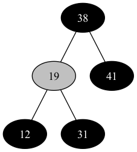
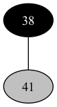
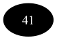

Chapter 13.4
13.4
13.4-1
In both cases, we won't change the color of the root, thus after executing
RB-DELETE-FIXUP, the root of the tree must be black.
13.4-2
If we have colored both \(x\) and \(x.p\) red, the call to RB-DELETE-FIXUP
will simply color \(x\) black, and restore property 4.
13.4-3
The initial tree.
Delete \(8\).

Delete \(12\).
Delete \(19\).
Delete \(31\).

Delete \(38\).

- Delete \(41\), the tree becomes empty.
13.4-4
We might examine or modify the sentinel \(T.nil\) in those lines as below.
- Line 1, since \(x\) might be \(T.nil\), and we examine the condition \(x.color == BLACK\).
- Line 2, since \(x\) might be \(T.nil\), and we examine the condition \(x == x.p.left\).
- Line 9, since both \(w.left\) and \(w.right\) might be \(T.nil\), and we examine the conditions \(w.left.color == BLACK\) and \(w.right.color == BLACK\).
- Line 12, since \(w.right\) might be \(T.nil\), and we examine the condition \(w.right.color == BLACK\).
- Line 20, since \(w.left\) might be \(T.nil\), and we modify \(w.left.p\) from \(w\) to \(x.p\).
- Line 23, since \(x\) might be \(T.nil\), and we modify \(x.color\) to \(BLACK\).
13.4-5
Case 1
Before transformation After transformation α 2 2 β 2 2 γ 2 2 δ 2 2 ε 2 2 ζ 2 2 Case 2
Before transformation After transformation α color(c) + 1 color(c) + 1 β color(c) + 1 color(c) + 1 γ color(c) + 2 color(c) + 2 δ color(c) + 2 color(c) + 2 ε color(c) + 2 color(c) + 2 ζ color(c) + 2 color(c) + 2 Case 3
Before transformation After transformation α color(c) + 1 color(c) + 1 β color(c) + 1 color(c) + 1 γ color(c) + 1 color(c) + 1 δ color(c) + 1 color(c) + 1 ε color(c) + 2 color(c) + 2 ζ color(c) + 2 color(c) + 2 Case 4
Before transformation After transformation α color(c) + 1 color(c) + 1 β color(c) + 1 color(c) + 1 γ color(c) + color(c') + 1 color(c) + color(c') + 1 δ color(c) + color(c') + 1 color(c) + color(c') + 1 ε color(c) + 1 color(c) + 1 ζ color(c) + 1 color(c) + 1
13.4-6
In case 1, \(x\)'s sibling \(w\) is a red node, and we left both \(w\) and
its parent \(p\) untouched before RB-DELETE-FIXUP, thus \(p\) must be black
at the start of case 1, otherwise we violate red-black property 4.
13.4-7
The resulting tree may not be the same as the initial red-black tree. Below is the counter example.
The initial tree.

Insert \(8\).
Delete \(8\).